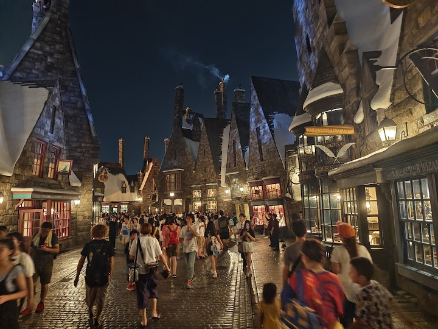
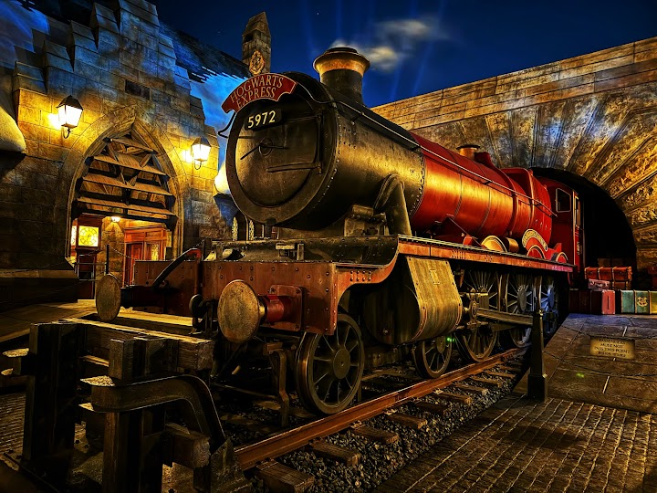
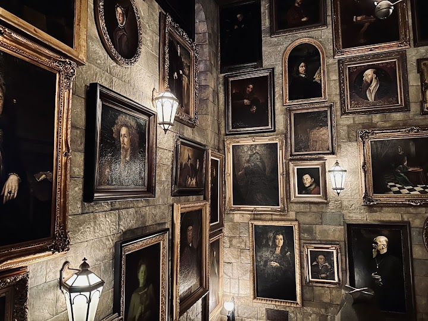
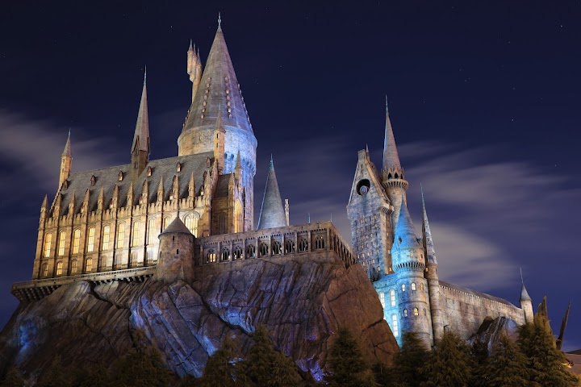
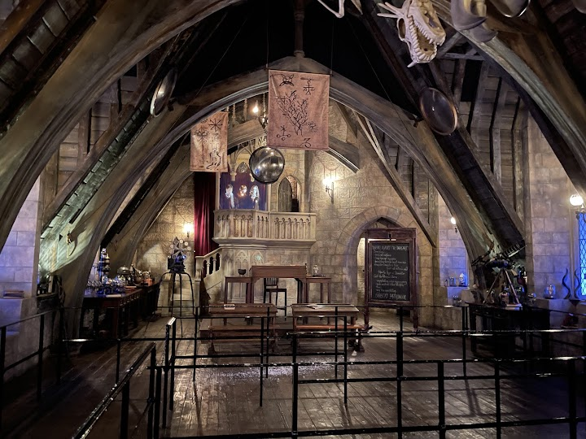

Harry Potter and the Forbidden Journey
The Forbidden Journey is the headline dark ride of the Wizarding World of Harry Potter, boarding inside Hogwarts Castle, with animatronics, effects and a flight over the grounds. The queue winds through the castle rooms and is half the experience; it can be 90 minutes without an Express Pass.
Open in Google Maps (street view, more photos and reviews there)






Visitor tips on finding it and getting there
One of my favorite attractions in the park - and not just because it’s Harry Potter themed, but because it’s genuinely interesting. The ride itself is actually quite simple. Your vehicle is suspended in the air and moves along a track through different sets, with screens appearing throughout the experience. But everything is done in such an interesting and atmospheric way! Even people in my group who have never watched the Harry Potter movies rated this attraction 5 out of 5. And the waiting area is an attraction in itself. While waiting in line, you walk through the rooms of Hogwarts, incl
Wow, What a special magical place. This ride takes you on a journey around Hogwarts castle (you're tied up to a chair but your legs are loose). However: the visuals could use an upgrade, since it is 2026 and it could be much more realistic and immersive. The line is a lot of fun (you walk through the Hogwarts isles), but since we had the ride in our pass, it was too quick for us to truly appreciate it.